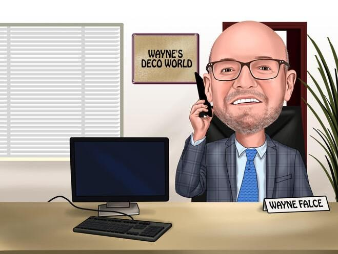
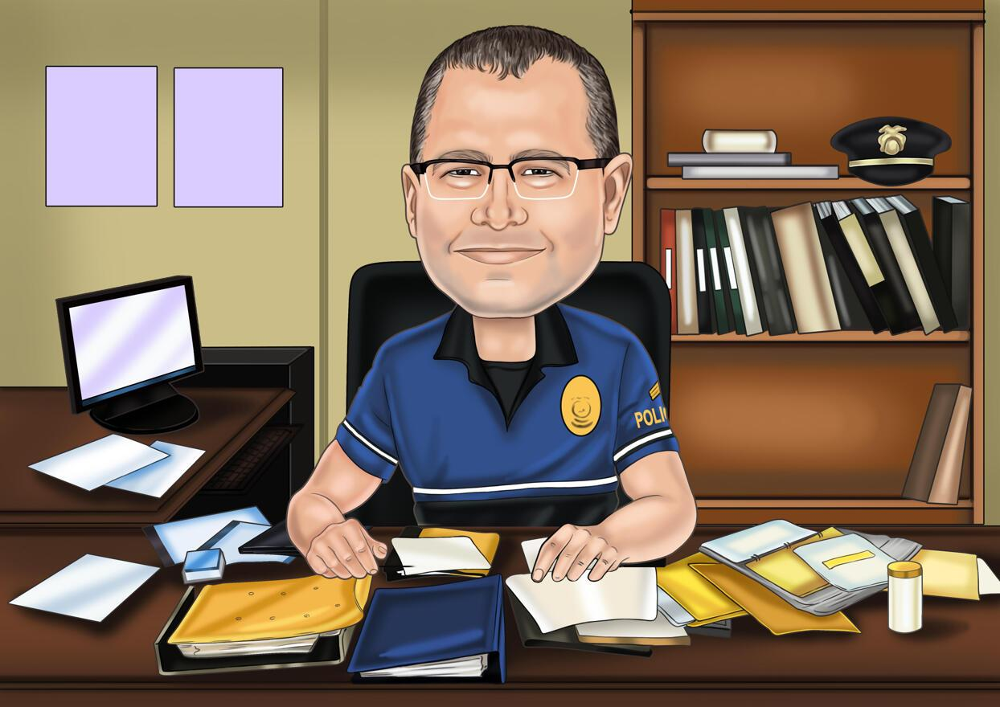

Echipa "Romanian Drugs Explorer"
Pentru a reuși să excelăm în domeniu cercetării consumului de droguri ne-am străduit să
dezvoltăm o echipă în
care fiecare membru să fie profesionit
în ceea ce privește contribuția sa la această organizație. Toți angajații sunt persoane foarte bine pregătite,
cu experiență și dedicații muncii lor. Echipa este alcătuită din:

Popescu Ciprian : DIRECTOR GENERAL :
- Absolvent al Universității AL. IOAN CUZA Iași
- Membru al echipe RoDx din 2002, Director general din 2007
- premiat internațional în cadrul congresului de la Paris (2009) fiind recunoscut ca cel mai bun
director
general in domeniul cercetării consumului de droguri din Europa
Eugenia Tonu : INGINER SPECIALIST MODELARE STATISTICĂ
- Absolvent al Universității MIHAIL KOGĂLNICEANU Iași
- Membru al echipe RoDx din 2010
- Numărul 1 in modelare statistică în România din anul 2012

Tudor Cătălin : COMISAR ȘEF AGENȚIA NAȚIONALĂ ANTIDROG
- coordonează, la nivel naţional, activităţile desfășurate în domeniul drogurilor
- Membru al echipei RoDx din anul 2000
- Experiență în domeniu de peste 20 de ani